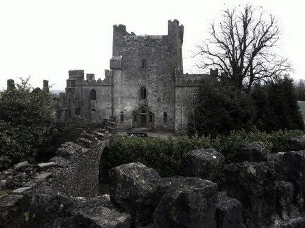
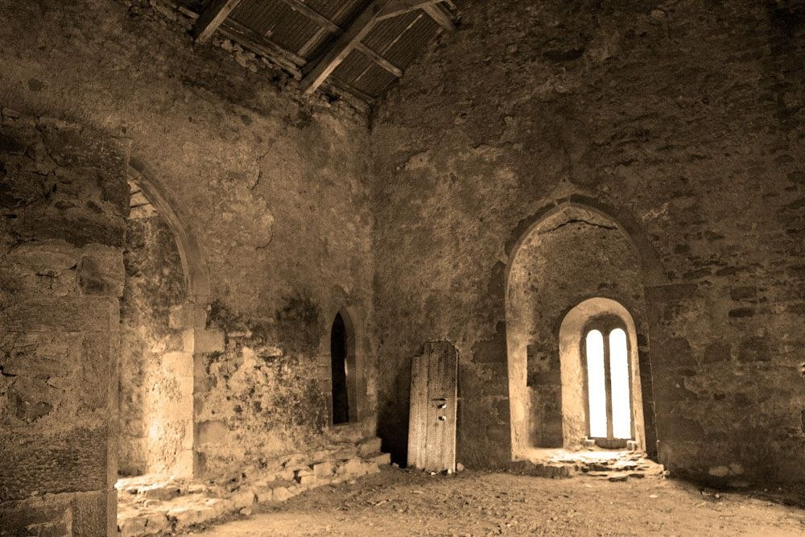
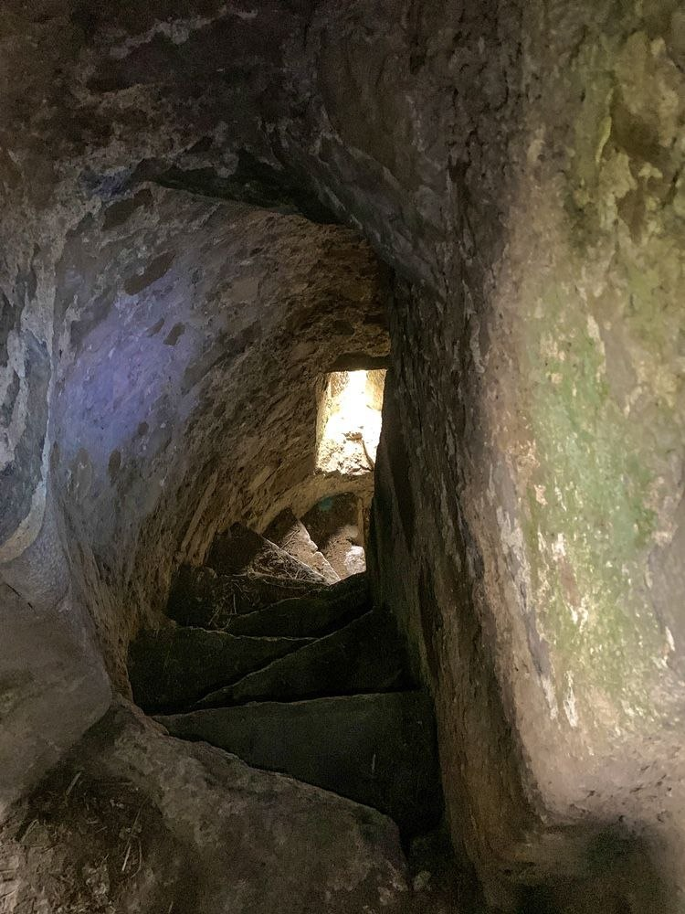
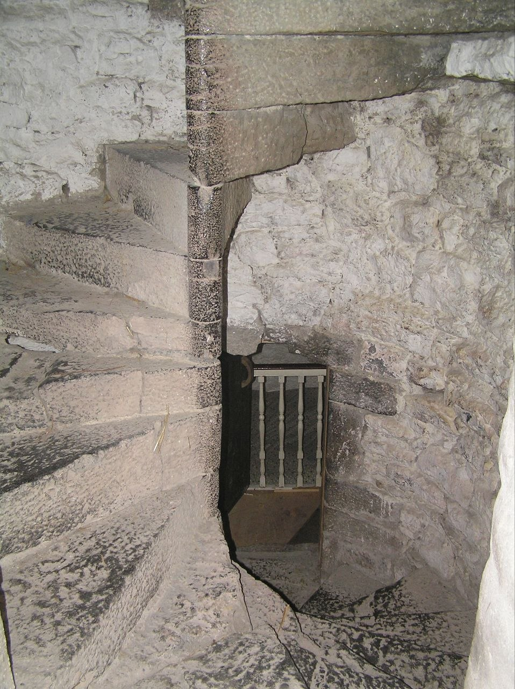
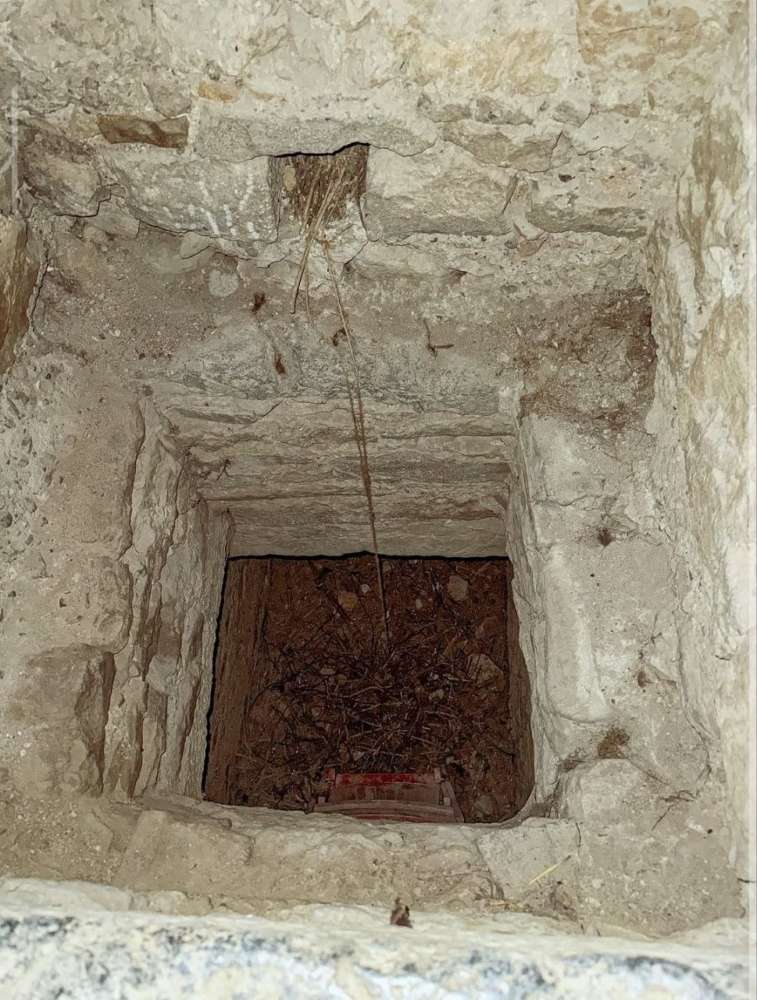

Каменные стены замка Лип хранят в себе гнетущую атмосферу средневековой жестокости, которую невозможно спутать ни с чем другим. Возведенный прямо на скалистом выступе над древним друидическим святилищем, этот оплот на протяжении веков служил ареной для кровавых династических войн, предательств, политических расправ и мистических ритуалов, отголоски которых до сих пор заставляют содрогаться историков и исследователей паранормальных явлений со всего мира.
В ирландском фольклоре замок Лип заслужил репутацию самого темного и проклятого замка на всём острове. Его история неразрывно связана с могущественным и беспощадным кланом О’Кэрролл, чья борьба за единоличную власть в регионе Эли О’Кэрролл сопровождалась непрерывной цепочкой предательств и жестоких убийств. Даже спустя столетия полуразрушенные стены и восстановленные залы продолжают привлекать путешественников и исследователей мистики, желающих своими глазами увидеть запечатанную «Кровавую Часовню» и раскрыть тайны его жутких подземелий.
«Прыжок О’Кэрролла»: Легенда о рождении крепости
Строительство главной каменной башни началось в конце XV века (ориентировочно в 1250–1480 годах). Семья О’Кэрролл заложила твердыню на месте древней скалы в стратегически важном узком проходе через горы Слив Блум. Этот горный перевал позволял контролировать ключевые торговые и военные пути, соединявшие провинции Ленстер и Манстер. Впрочем, выбор места диктовался не только военной стратегией: задолго до появления первой каменной кладки кельтские друиды проводили на этой высоте свои таинственные обряды, считая скалу местом перекрестка духовных сил.
Само название «Лип» восходит к ирландскому наименованию Léim Uí Chorbhmaic, что переводится как «Прыжок О’Кэрролла». Согласно старинному преданию, записанному в местной хронике, два брата из вождей рода вступили в смертельное соперничество за право возглавить клан. Чтобы разрешить споры без затяжной междоусобицы, они устроили испытание веры и храбрости: оба соперника должны были прыгнуть с вершины высокой скалы на острые камни у её подножия. Тот, кто остался в живых, не только принял титул вождя, но и воздвиг на запятнанной кровью скале непреступную башенную крепость.
Информация
- Дата постройки: Конец XV века (основа)
- Основатели: Клан О'Кэрролл (Эли О'Кэрролл)
- Статус: Частное владение / Исторический памятник
Факты из хроник
При расчистке потайной темницы-ублиета в начале XX века рабочие извлекли три полные повозки человеческих останков. Среди скелетов были обнаружены карманные золотые часы 1840-х годов, что подтвердило факт: ублиет продолжали скрытно использовать даже в XIX столетии.
Кровавая Часовня и Братоубийство
В 1532 году, со смертью могущественного вождя Мурога О’Кэрролла, в замке разразилась жестокая династическая война за право наследования. Семья раскололась на два враждующих лагеря. Главными соперниками стали двое сыновей — Тейг О’Кэрролл и его брат (по одной из версий — священник по имени Джон). В один из дней брат-священник проводил семейную мессу для своих сторонников в домовой церкви на самом верхнем ярусе центральной башни.
Ослепленный яростью и жаждой власти Тейг с вооруженными людьми ворвался в помещение прямо во время святого причастия. Не обращая внимания на алтарь и священные молитвы, Тейг вонзил свой меч в спину брата. Смертельно раненый священник рухнул на алтарные ступени, запятнав их кровью на глазах у молящихся родственников. С того дня верхний зал навсегда закрепил за собой название «Кровавая Часовня». Согласно местным поверьям, мерцающий призрачный свет в высоких оконных проемах этой часовни порой виден с ночной дороги и в наши дни.

Ублиет: Бездна, из которой нет возврата
За алтарной стеной Кровавой Часовни располагалась незаметная тайная дверь, вудещая в глухую вертикальную шахту — ублиет (от французского слова oublier — «забыть»). Хозяева замка из рода О’Кэрролл использовали это укрытие для вероломных расправ: сюда сбрасывали захваченных пленников, неугодных гостей и даже наемников из сторонних кланов (например, наемников Максвини), с которыми расплачивались смертью сразу после завершения пира.
На дне узкой камнерезной шахты на глубине нескольких метров были вертикально вмонтированы острые железные и деревянные пики. Ублиет был спроектирован так, чтобы падающие с высоты жертвы не всегда погибали сразу, а оказывались нанизаны на колья и медленно умирали в полной темноте среди разлагающихся трупов своих предшественников.
«Существо было размером с крупную овцу, с темным истощенным лицом, напоминающим человеческое, но с полностью провалившимися глазами. От него исходил удушающий, невыносимый запах гниения, трупного яда и серы...»
Сущность «Элементаль»
В конце XIX века замок перешел во владение английского рода Дарби. Жена владельца, Джонатана Дарби, писательница Милдред Дарби, всерьез увлекалась спиритизмом, оккультными науками и регулярным проведением спиритических сеансов в старинных залах. По мнению исследователей паранормального, своими ритуалами она тревожила спящую в стенах древнюю темную сущность, известную как «Элементаль» (The Elemental) или «Оно» (It).
Исследователи мистического фольклора выдвигают версию, что Элементаль представляет собой древнее друидическое заградительное заклятие или духа-хранителя земли, созданного для защиты от иноземных захватчиков. Веками впитывая страдания, страх и кровь убитых в стенах замка людей, этот дух переродился в злобную и отталкивающую сущность.

Призрак «Красной Дамы»
На фото виден узкий каменный проход с аутентичной винтовой лестницей. По рассказам владельцев и очевидцев, здесь регулярно появляется дух «Красной Дамы» — высокой женщины в развевающемся красном одеянии с кинжалом в руке, молча перемещающейся между ярусами замка.

Сводчатые переходы подземелий
На снимке показаны мрачные каменные своды нижних ярусов. Из-за вековой сырости, отсутствия дневного света и тяжелого прошлого эти подвалы считаются центром аномальной активности. Посетители регулярно отмечают аномальное падение температуры.

Темница-ублиет (Oubliette)
Вертикальная потайная шахта за Кровавой часовней. Извлекаемые из неё повозки с костями стали доказательством многочисленных расправ. Согласно легенде, именно из этой бездны поднимается чудовищный «Элементаль».
Современность
Во время Ирландской гражданской войны в 1922 году замок Лип был разграблен и подожжен боевиками ИРА, так как семьи Дарби ассоциировалась с английским господством. В течение почти семидесяти лет древнее строение оставалось обугленным и покинутым каменным остовом.
В 1991 году руины замка выкупил известный ирландский музыкант Шон Райан. Он приложил огромные усилия к частной реконструкции помещений и проживает там со своей семьей. Шон открыто относится к незримым обитателям своего дома: по его словам, потусторонние силы стали частью повседневного быта, а сам музыкант неоднократно играл для них на традиционной ирландской флейте в старинных залах.